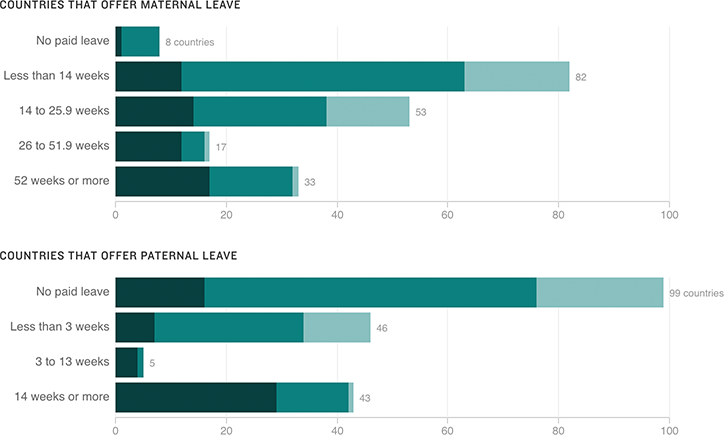

Family Leave Around The World, By Duration
The United States is one of 8 countries — and the only high-income country, as classified by the World Bank — that do not have paid maternity leave. Far fewer countries have paid paternity leave.
High income
Middle income
Low income
